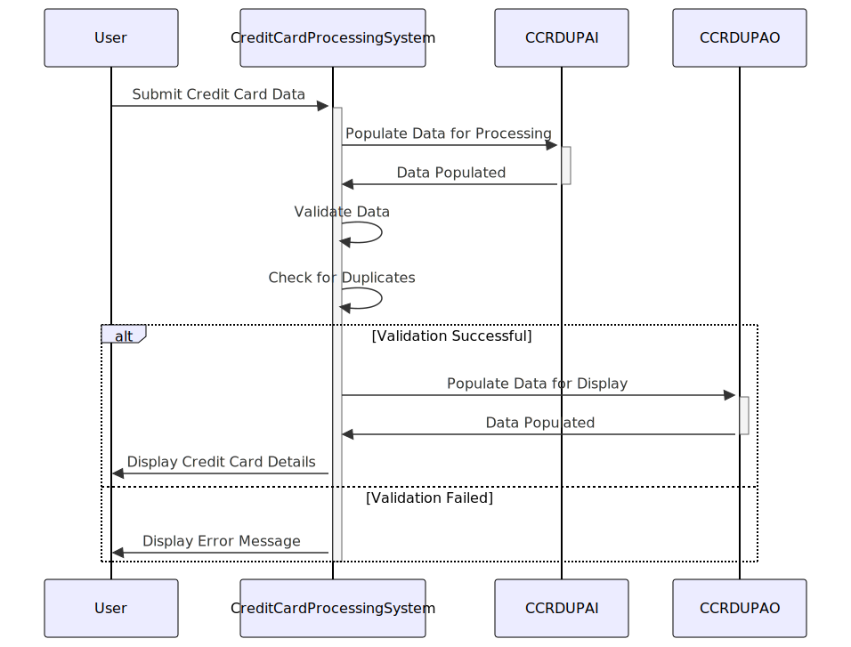

Gerado em: 1º de outubro de 2024
Título do Documento: Especificação da Estrutura de Dados para Verificação de Cartões de Crédito Duplicados
Descrição Resumida: Este documento descreve a estrutura das informações de cartão de crédito usadas para detectar duplicatas dentro de um sistema COBOL. Ele define como esses dados são organizados, tanto para processamento interno quanto para exibição ao usuário, garantindo a integridade dos dados e facilitando a verificação de duplicatas. O sistema lê os dados do cartão de crédito, valida-os em relação às regras predefinidas e gera saída com base nos resultados da validação.
Histórias do Usuário: Como Analista de Risco de Crédito, desejo garantir que todos os dados de cartão de crédito usados para análise estejam livres de duplicatas para manter a integridade dos dados e tomar decisões informadas.
Épico Relacionado: 3 - Gestão de Cartões de Crédito
Requisitos Técnicos:
Estruturas de Dados:
CCRDUPAI: Representa a estrutura interna dos dados do cartão de crédito usados para processamento.CCRDUPAO: Define o formato de exibição dos dados do cartão de crédito para apresentação ao usuário.Campos de Dados: Ambas as estruturas contêm campos para:
TRNNAME: Nome da transação.TITLE01: Título ou cabeçalho para a primeira seção de informações.CURDATE: Data atual.PGMNAME: Nome do programa ou módulo.TITLE02: Título ou cabeçalho para a segunda seção de informações.CURTIME: Hora atual.ACCTSID: ID da conta associada ao cartão de crédito.CARDSID: Número do cartão de crédito.CRDNAME: Nome do titular do cartão.CRDSTCD: Código de status do cartão de crédito (por exemplo, “Ativo”, “Bloqueado”).EXPMON: Mês de expiração do cartão de crédito.EXPYEAR: Ano de expiração do cartão de crédito.EXPDAY: Dia de expiração do cartão de crédito.INFOMSG: Mensagens informativas para o usuário.ERRMSG: Mensagens de erro.FKEYS: Teclas de função disponíveis para interação do usuário.FKEYSC: Descrições das teclas de função.Validação de Dados: O sistema deve realizar verificações para garantir que:
Detecção de Duplicatas:
Modelos Relacionados:
cardNumber: String - O número do cartão de crédito.expiryDate: Date - A data de expiração do cartão de crédito.cardholderName: String - O nome do titular do cartão.status: String - O status do cartão de crédito (por exemplo, “Ativo”, “Bloqueado”).transactionName: String - O nome ou tipo de transação (por exemplo, “Compra”, “Reembolso”).transactionDate: Date - A data da transação.transactionTime: Time - A hora da transação.accountID: String - O ID da conta associada à transação.Configurações:
CSMSG02Y.cpy - Contém mensagens de erro exibidas ao usuário.
ERR001: “Formato de número de cartão de crédito inválido.”ERR002: “Cartão de crédito expirado.”ERR003: “Cartão de crédito duplicado detectado.”YYYYMMDDMelhorias de Código:
Melhorias de Segurança:
Diagrama Conceitual:
–Made by “Smart Engineering” (by Compass.UOL)–